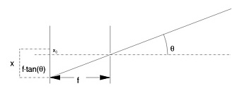

Camera characteristics
There are a set of optical transfer functions supported (and
their inverses). Below follows a short description of them that
should make it possible to extend the functions camera_model.m
and camera_invmodel.m if the appropriate model
is missing. The optical transfer functions determine where in
the image light coming from a direction ( phi, theta ) will
project. The inverse of the transfer functions determine the
direction of the field of view of a pixel ( u, v ).

Here it should be noted that the coordinate system in the above
figure is the camera fixed system and follows the rotations of
the camera.
1 Pinhole camera model
Where:
2 Fish-eye camera model
Where:3 ALIS camera model
Where:
4 Pinhole camera with half spherical backside
Where:
Modified pin-hole camera model
Where:
The optical parameters are transfered
between different functions as an array built up like this:
.
Where the use of is obvious from the
above equations and optmod is an integer ( 1, 2, 3, 4 or 5) that
selects the optical model to use. The parameters rot1, rot2 and
rot3 are three angles of rotation
(in degrees) to apply.